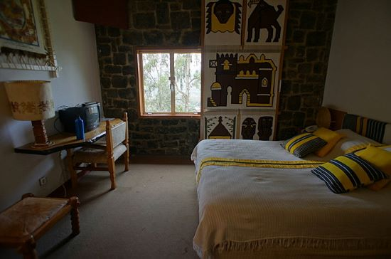
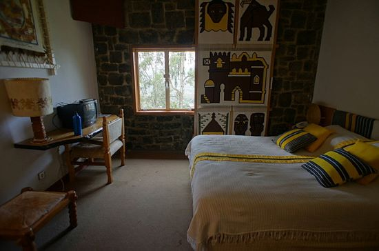

Accomodation Services You Can Get From Us
The Accomodation Sercices Include Both The Cultural/Historical Places and The Modern One.
Historical and Cultural Categories
Goha Hotel
The Birth of Goha hotel
From stunning views to historical wonders of Ethiopia, Gondar with its mysterious castles, was the 17th century capital of king Fasiledes. Goha hotel in Gondar is ideally situated on the hills of the city and a short distance away from these royal enclosures. The hotel has over 82 rooms and suites that feature excellent amenities including free high-speed wireless Internet access and flat-screen televisions. Additional amenities such as swimming pool,free airport shuttle service, souvenir shop, restaurant, bar with campfire are also there to make your stay a comfortable one. Goha Hotel stands on a hill with an enchanting view of the city. Equipped with the most up-to-date facilities and elegantly furnished rooms, the hotel offers a luxurious retreat for its visitors. You can enjoy a breathtaking view of the panorama stretching away towards the distant Lake Tana.

 

Kuriftu Resorts
Kuriftu Resort & Spa Awash Falls
Located on the northen tip of Bishoftu encompassing the smallest of the four lakes lies our flagship resort, Kuriftu Resort & Spa Bishoftu. This resort made its mark in 2007 as the first 5-star resort in the country. Inspired by natual elements, our construction team has designed and developed each of our properties since the birth of the Kuriftu brand. In kuriftu you Discover Extraordinary Destinations, Absorb the unique beauty of Ethiopia's natural landscapes and prominent cultural heritage. our resort and spa is also encircled by so many adventurous activities. If you are looking to spend an afternoon of fun with family or friends, searching the perfect weekend getaway, planning a birthday or group event, or even surprising a loved one, Kuriftu Water Park is your ultimate choice. If you want to pass a memorable time with a lake of historic and cultural values Lake Tana would be your perfect choice.
Modern Categories
Sheraton Addis Hotel
A Luxury Collection hotels, Addis Ababa
Sheraton Addis, a Luxury Collection Hotel, Addis Ababa, a Luxury Collection Hotel offers accommodation in Addis Ababa. Guests can enjoy the outdoor pool or relax at the spa and wellness centre. Free parking is available on site and there is free WiFi in the public areas. The rooms at Sheraton Addis, a Luxury Collection Hotel, Addis Ababa feature flat-screen TVs with cable channels. The rooms are equipped with a desk, a minibar and a DVD player. Sheraton Addis, a Luxury Collection Hotel, Addis Ababa guests can enjoy a meal or a drink at one of the 11 restaurants or bar/lounge outlets available on site, offering an array of cuisines. The hotel offers a children’s playground and a gift shop, and guests can enjoy activities such as karaoke or an evening at Gaslight Night Club.
Skylight Hotel
Hotel of PanAfricanism
Get the best of Ethiopia's buzzing capital and the finest in hospitality at Ethiopian Skylight Hotel Addis Ababa. It's never been easier to mix travel, business, and leisure. So, take care of business, sleep in style each night and have total connectivity to Addis Ababa's vibrant heart. Be spoilt for choice with 373 comfortably modern rooms and suites spread over seven different room types. Wind down in stylish city comfort in our Standard and Premium Rooms. Check out the extra modern amenities of our Junior and Executive Suites. All rooms and suites offer a host of contemporary design features and essential comforts, including full Wi-Ficonnectivity. Practical yet sophisticated in character, personal touches and little details ensure a memorable experience. Indulge your palate with delicious international and local dishes passionately prepared with the freshest ingredients at Ethiopian Skylight Hotel, Addis Ababa.
which one is your favorite?
send us a message here